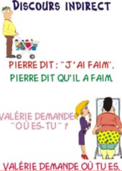

Discours direct ou discours indirect : la phrase ne change pas de sens.

Le docteur m'a dit : 'vous avez des problèmes dans la gorge '.
Le docteur m'a dit que j'avais des problèmes dans la gorge.
Le professeur dit à ses élèves : 'Vous aurez un contrôle demain.' => discours direct
Le professeur dit à ses élèves qu’ils auront un contrôle demain. => discours indirect
Le professeur a dit à ses élèves : 'Vous aurez un contrôle demain.' => discours direct
Le professeur a dit à ses élèves qu’ils auraient un contrôle le lendemain. => discours indirect
Le verbe dire' est appelé VERBE INTRODUCTEUR
Vous avez sans doute remarqué la différence entre les deux exemples,
le verbe introducteur dans l’exemple 1 est au présent, et au passé dans l’exemple 2
et vous voyez que le connecteur de temps change au discours indirect.
Discours direct : Les paroles sont rapportées telles quelles, sans être modifiées. On remarque la présence des guillemets précédés de 2 points et de verbes introducteurs comme (demander ou répondre, dire…).
On peut également trouver des points d’interrogation ou d’exclamation…
Discours indirect : Il rapporte les paroles en introduisant une subordonnée complétive (Il a dit qu’il aimait tant ses parents.) Il se caractérise par l’absence de guillemets ainsi que des points d’interrogation et d’exclamation.
On change les adjectifs, les pronoms personnels et possessifs ainsi que certains mots interrogatifs.
NOTEZ BIEN : Lorsque le verbe introducteur est au présent, il n’y a pas de changement dans les temps des verbes ainsi que dans les indicateurs spatio-temporels lors du passage du discours direct au discours indirect.
Lorsque le verbe introducteur est au passé, on applique des changements dans le temps des verbes de la complétive et dans les indicateurs spatio-temporels.
| Discours direct | Discours indirect |
|---|---|
| Présent de l’indicatif | Imparfait |
| 'Tu peux me le prêter ?' me demanda-t-il | Il me demanda si je pouvais le lui prêter. |
| Passé composé /passé simple | Plus - que - parfait |
| L’enfant a dit ' J’ai fini mes devoirs'. | L’enfant a dit qu’il avait fini ses devoirs. |
| Impératif | De + Infinitif |
| Je lui ai dit ' vas-y!' | Je lui ai dit d’y aller |
| Futur | Conditionnel présent |
| Il disait ' Je visiterai la France.' | Il disait qu’il visiterait la France. |
| Futur antérieur | Conditionnel passé |
| 'Nous aurons bientôt terminé la leçon.' nous a dit le professeur. | Le professeur nous a dit que nous aurions bientôtterminé la leçon. |
| Discours direct | Discours indirect |
|---|---|
| Aujourd’hui | Ce jour-là |
| Il a dit ' On a beaucoup d'exercices aujourd'hui.' | Il a dit qu'on avait beaucoup d'exercices ce jour-là. |
| Demain | le lendemain |
| Lucile a dit 'Je reviendrai demain.' | Lucile a dit qu'elle reviendrait le lendemain. |
| Hier | la veille |
| Elle m'a dit 'Je les ai achetés hier.' | Elle m'a dit qu'elle les avait achetés la veille. |
| Jour/année/lundi … Prochain | Jour/année/lundi… Suivant |
| Mon frère m'a dit : 'J'aurai mon bac l'année prochaine.' | Mon frère m'a dit qu'il aurait son bac l'année suivante. (vous entendrez aussi 'l'année prochaine') |
| Discours direct | Discours indirect |
|---|---|
| Adjectif démonstratif + G nominal | Adjectif démonstratif+G nominal +là Dans le langage moderne, vous entendrez de moins en moins le 'là'. |
| Elle demanda 'Combien coûte cette robe ?' | Elle demanda combien coûtait cette robe-là |
| Il a dit : 'J'ai beaucoup de travail ce matin.' | Il a dit qu'il avait beaucoup de travail ce matin-là |
| Il m'a dit : 'Je vais lire ces livres.' | Il m'a dit qu'il allait lire ces livres-là. |
Les adverbes et adjectifs interrogatifs restent invariables (pourquoi ? Combien ? Comment ? Avec qui ? ... )